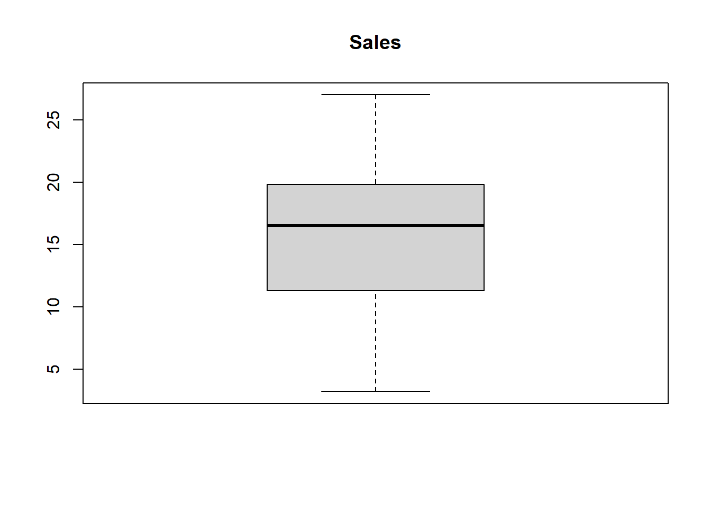
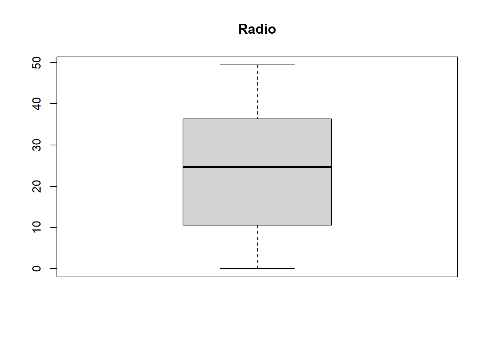
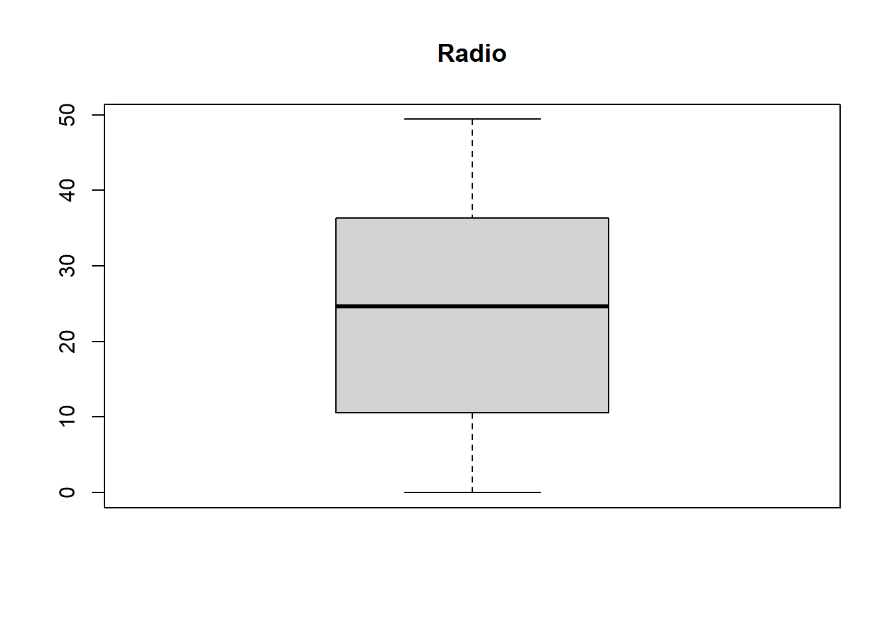
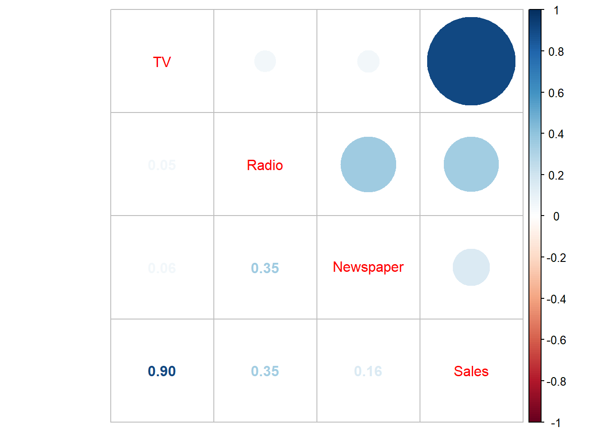

Forecasting sales from advertisement
1 About the data
This data set contains statistics about the sales of a product in 200 different markets together with advertising budgets in each of these markets for different media channels: TV, Radio, Newspaper. The sales are in thousands of units and the budget is in thousands of dollars.
1.1 Problem Statement
In this report we want to build a model that will predict sales as accurately as possible.
2 Importing and preparing the data
library(dplyr)
library(tidyverse)
library(knitr)
library(ggplot2)
library(caTools)
library(corrplot)| TV | Radio | Newspaper | Sales |
|---|---|---|---|
| 230.1 | 37.8 | 69.2 | 22.1 |
| 44.5 | 39.3 | 45.1 | 10.4 |
| 17.2 | 45.9 | 69.3 | 12.0 |
| 151.5 | 41.3 | 58.5 | 16.5 |
| 180.8 | 10.8 | 58.4 | 17.9 |
| 8.7 | 48.9 | 75.0 | 7.2 |
2.1 Splitting the data set into the training set and test set
2.2 Exploratory analysis on the training data
2.2.1 Box plot
We’re going to use a box plot to provide indication of the data’s symmetry and skewness and to detect any outliers.
boxplot(TrainingSet$Sales,main="Sales",sub=paste(boxplot.stats(TrainingSet$Sales)$out))
boxplot(TrainingSet$TV,main="TV",sub=paste(boxplot.stats(TrainingSet$TV)$out))
boxplot(TrainingSet$Radio,main="Radio",sub=paste( boxplot.stats(TrainingSet$Radio)$out))
boxplot(TrainingSet$Newspaper,main="Newspaper",sub=paste('Outlier: ',boxplot.stats(TrainingSet$Newspaper)$out)) 

From the plots above it seems only Newspaper has outliers. Lets’ view a scatter plot to see if the outlier has any effect on it’s relationship with Sales.
ggplot(advertising,aes(x=Newspaper,y=Sales))+geom_point()+geom_smooth(method = 'lm')+labs(title="Sales~Newspaper")+theme_minimal()The outlier seems to have no significance so we move on.
2.2.2 Correlation plot

There seems to be a significant correlation between Sales and TV as well as Sales and Radio, but not so much with Sales and Newspaper. We could decide to drop it but we’ll check to see if there are any interaction effects between Newspaper and any other predictor variable.
NB The main effect is the effect of one of the predictor variables on the response variable. An interaction effect on the other hand occurs if there is an interaction between the predictor variables that affect the outcome of the response variables.
3 Building the regression model
(Intercept) TV Radio Newspaper
4.903108382 0.054134024 0.109476517 -0.005805077 4 Evaluating model performance
Call:
lm(formula = Sales ~ TV + Radio + Newspaper, data = TrainingSet)
Residuals:
Min 1Q Median 3Q Max
-3.2000 -0.9256 0.0044 0.8760 3.5081
Coefficients:
Estimate Std. Error t value Pr(>|t|)
(Intercept) 4.903108 0.329838 14.865 <2e-16 ***
TV 0.054134 0.001603 33.777 <2e-16 ***
Radio 0.109477 0.010049 10.894 <2e-16 ***
Newspaper -0.005805 0.006592 -0.881 0.38
---
Signif. codes: 0 '***' 0.001 '**' 0.01 '*' 0.05 '.' 0.1 ' ' 1
Residual standard error: 1.546 on 129 degrees of freedom
Multiple R-squared: 0.9195, Adjusted R-squared: 0.9176
F-statistic: 491.3 on 3 and 129 DF, p-value: < 2.2e-16Here, the Residual standard error is 1.546.
The adjusted r-squared value measures how much of the variation in the response variable is explained by the set of predictors. In this case 91.95% of the variation in
Salesis explained by the set of predictors. But this does not necessarily mean that the model will predict new data accurately.
Let’s take a look at the model accuracy.
pred.model1=predict(model1,newdata = TestSet)
accuracy1=data.frame(cbind(actual=TestSet$Sales,predicted=pred.model1))
cor1=cor(accuracy1)
cor1[1,2][1] 0.9305309Our model predicted our test data with an accuracy of 93.05% .It seems our model is good for predicting but it wouldn’t hurt to improve our prediction accuracy.
5 Improving model performance: accounting for interaction effects
Call:
lm(formula = Sales ~ (TV + Radio + Newspaper)^2, data = TrainingSet)
Residuals:
Min 1Q Median 3Q Max
-3.6692 -0.8839 -0.0694 0.9555 3.5529
Coefficients:
Estimate Std. Error t value Pr(>|t|)
(Intercept) 6.058e+00 5.893e-01 10.281 < 2e-16 ***
TV 4.709e-02 3.157e-03 14.916 < 2e-16 ***
Radio 5.630e-02 2.279e-02 2.471 0.01482 *
Newspaper -1.249e-02 1.959e-02 -0.637 0.52503
TV:Radio 3.093e-04 1.179e-04 2.624 0.00976 **
TV:Newspaper -1.936e-05 6.857e-05 -0.282 0.77810
Radio:Newspaper 3.297e-04 4.566e-04 0.722 0.47154
---
Signif. codes: 0 '***' 0.001 '**' 0.01 '*' 0.05 '.' 0.1 ' ' 1
Residual standard error: 1.511 on 126 degrees of freedom
Multiple R-squared: 0.9248, Adjusted R-squared: 0.9212
F-statistic: 258.3 on 6 and 126 DF, p-value: < 2.2e-16As expected there are some interaction effects. Here, between
TVandRadio.Also, we see that the Residuals standard error is 1.511. This is an improvement from our previous model.
The adjusted r-squared is 0.9192 Therefore in this case 93% of the variation in
Salesis explained by the set of predictors. This is also an improvement from our previous model.
Let’s take a look at the model accuracy.
pred.model2=predict(model2,newdata = TestSet)
accuracy2=data.frame(cbind(actual=TestSet$Sales,predicted=pred.model2))
cor2=cor(accuracy2)
cor2[1,2][1] 0.9415642In our improved model, the model accuracy is 94.16%, not quite a big improvement from our previous model, but an improvement nonetheless.
6 Summary of our two models: The original and improved
We compare the two models
\[Original\ model: Sales \approx \beta_0+\beta_1\cdot TV + \beta_2 \cdot Radio + \beta_3 \cdot Newspaper\] \[Improved\ model: Sales \approx \beta_0+\beta_1 \cdot TV+\beta_2 \cdot Radio+ \beta_3 \cdot Newspaper+\\ \beta_4\cdot (TV \cdot Radio)+ \beta_5 \cdot(TV \cdot Newspaper)+ \beta_6 \cdot (Radio \cdot Nespaper)\]
RSE<-c(summary(model1)$sigma,summary(model2)$sigma)
Rsquared<-c(summary(model1)$r.squared,summary(model2)$r.squared)
prediction.accuracy<-c(cor1[1,2],cor2[1,2])
overview<-data.frame(RSE,Rsquared,prediction.accuracy)
rownames(overview)<-c("Original model","Improved model")
kable(t(overview))| Original model | Improved model | |
|---|---|---|
| RSE | 1.5455151 | 1.5113351 |
| Rsquared | 0.9195142 | 0.9248247 |
| prediction.accuracy | 0.9305309 | 0.9415642 |